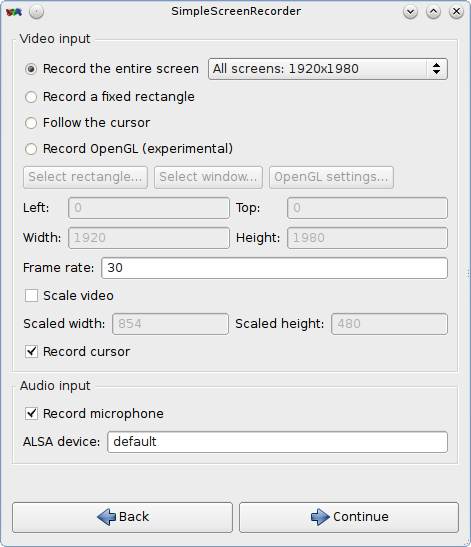

SimpleScreenRecorder включает в себя расширенные возможности и настройки для записи экранного видео в Linux
Неполный список из заявленного:
- Интерфейс на Qt;
- Быстрее VLC и ffmpeg/avconv;
- Запись целого экрана либо его части, запись OpenGL приложений напрямую (как это делает Fraps на платформе Windows);
- Более точная синхронизация видео со звуком (в сравнении с VLC и ffmpeg/avconv);
- Полная поддержка многопоточности;
- Остановка и возобновление записи по хоткею или через иконку приложения в трее;
- Отображение статистики во время записи: размер файла, время записи, частота кадров, битрейт и т.д.;
- Предпросмотр записанного во время записи - не нужно тратить время на перепросмотр материала;
- Экспериментальная поддержка «live streaming»;
- Универсальные настройки по-умолчанию;
- Всплывающие подробные подсказки практически ко всему;
Есть пакеты для дистрибутивов: Ubuntu, Arch Linux, OpenSUSE, Debian, Gentoo, Fedora. Простая компиляция и установка для других дистрибутивов.
Скриншот:
